Haber Listesi »
Aralık12025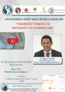
» Geleneksel Dost Meclisi Buluşmaları "Terörsüz Türkiye ve Ortadoğu'ya Yansımaları"
Aralık
1
2025

Kasım32025 » Geleneksel Dost Meclisi Buluşmaları "Enine Boyuna Sağlıklı Yaşam"
Kasım
3
2025
Mayıs132025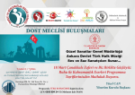
» 13.5.2025 Dost Meclisi Buluşması Ankara Devlet Türk Halk Müziği 18 Mart Çanakkale Zaferi ve Biz Birlikte Güçlüyüz Ruhu İle Kahramanlık Eserleri Programı Altındağ Belediyesi Kabakçı Konağı Hamaönü
Mayıs
13
2025

Aralık102024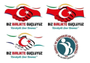
» İdareci ve Bürokratlar BİRLİĞİ DERNEĞİ Olağan Kongresi 21. 12.2024 Saat 11.00 de Altındağ Belediyesi Kabakçı Konağı Mehmet Akif Ersoy Sk. No17. Altındağ/Ankara
Aralık
10
2024

Aralık12024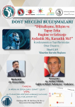
» İDARECİ VE BÜROKRATLAR BİRLİĞİ DERNEĞİ, DOST MECLİSİ BULUŞMALARI-KONFERANSLARI TARİHİ DOKU VE İNANÇ KÜLTÜRÜ MOZAİĞİNDE KABAKÇI KONAĞI-HAMAMÖNÜ ANKARA.. Tarih: 03.12 2024 Salı , saat 19.00 KONU: Dijit
Aralık
1
2024

Kasım52024 » DUYURU İdareci ve Bürokratlar BİRLİĞİ DERNEĞİ Olağan Kongresi 23.11. 2024 tarihinde saat 11.00'de İdareci ve Bürokratlar Birliği Derneğinde gerçekleştirilecektir.
» DUYURU İdareci ve Bürokratlar BİRLİĞİ DERNEĞİ Olağan Kongresi 23.11. 2024 tarihinde saat 11.00'de İdareci ve Bürokratlar Birliği Derneğinde gerçekleştirilecektir.
Kasım
5
2024
Kasım52024 » DUYURU İdareci ve Bürokratlar BİRLİĞİ DERNEĞİ Olağan Kongresi 23.11. 2024 tarihinde saat 11.00'de İdareci ve Bürokratlar Birliği Derneğinde gerçekleştirilecektir. Salt çoğunluk sağlanamaması halinde ç
Kasım
5
2024
Eylül302024 » BİRLİKTE GÜÇLÜ BİR ŞEKİLDE GELENEKTEN GELECEĞE
Eylül
30
2024
Eylül302021 » 30 Eyl 2021 3 Yıl Önceki Projemiz Yıldönümü
Gençlik ve Spor Bakanlığı tarafından desteklenen ve İdareci ve Bürokratlar Birliği Derneği tarafından yürütülen Pro
Eylül
30
2021
Şubat42023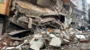
» MANEVİ, MİİLLİ, MADDİ BİRLİK, BERABERLİK, YARDIMLAŞMA SEFERBERLİĞİNE ÇAĞRI, DAVET.
Şubat
4
2023

Şubat72023 » İdareci be Bürokratlar Birliği Derneği Dost Meclisi Buluşmaları Basın Yer Aldı
» İdareci be Bürokratlar Birliği Derneği Dost Meclisi Buluşmaları Basın Yer Aldı
Şubat
7
2023
Şubat52023 » İdareci ve Bürokratlar Birliği Derneği’nin, 2023 yılı Dost Meclisi Buluşmaları başladı.
Şubat
5
2023
Şubat32023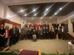
» HİÇ DE İNANÇLARA, İNSAN HAKLARINA SAYGILI VE DEMOKRAT, HOŞGÖRÜLÜ DEĞİLSİNİZ; SİZ BARBAR, DESPOT, IRKÇI, İSLAMOFOBİ İLE KORKULARINIZIN ESİRİ RUH HASTASISINIZ
Şubat
3
2023

Ocak232023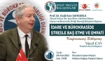
» Dost Meclisi buluşmasında Prof. Dr. Kadirhan SUNGURLUOĞLU "İdare ve Bürokraside Stresle Baş Etme ve Empati" Konferansı ile buluşuyoruz.
Ocak
23
2023

Kasım242022 » Derneğimizin Genel Başkanı Sayın Yücel Can'ın annesi Güllü Can vefat etti.
Kasım
24
2022
Eylül262022 » Kanal 5 Ekranlarında Canlı Yayındayız.
Eylül
26
2022
Eylül162022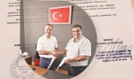
» İdareci ve Bürokratlar Birliği Derneği Genel Başkanı Sayın Yücel CAN ve Bereket Sigorta A.Ş, Bereket Emeklilik Ve Hayat A.Ş Ankara Bölge Müdürü Sayın İbrahim UZUN ortak protokol için bir araya geldi.
Eylül
16
2022

Eylül152022 » KANAL5 TV ÇOK YÖNLÜ PROGRAMLARI, İNSANA VE STK’NA ÖNEM VEREN YÜZÜ İLE BASININ ÇOK YÖNLÜ GÖRÜNTÜSÜ, SESİDİR
Eylül
15
2022
Eylül142022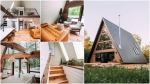
» Bungalov ve her türlü inşaat işinde İdareci ve Bürokratlar Birliği Derneği Üyelerine %15 indirim....
Eylül
14
2022

Eylül92022 » İdareci ve Bürokratlar Birliği Derneği Genel Başkanı Yücel CAN beraberindeki Kurul Üye ve Temsilcileri Ceza ve Tevkif İşleri Genel Müdürü Sayın Enis Yavuz YILDIRIM’a tebrik ve nezaket ziyaretinde bulu
Eylül
9
2022
Eylül82022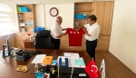
» İdareci ve Bürokratlar Birliği Derneği Genel Başkanı Yücel CAN, Türkiye İnsan Hakları ve Eşitlik Kurumu (TİHEK) Başkan Yardımcısı Sayın Yılmaz BÖLÜKBAŞI ile yapılan ziyarette konu önceliği insandı.
Eylül
8
2022

Eylül52022 » GÜLÜNÇ DURUMA DÜŞEN GÜLŞEN'E ORTAK TEPKİ ve ORTAK ÇAĞRI...
Eylül
5
2022
Eylül42022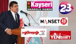
» İdareci ve Bürokratlar Birliği Derneği Yönetim Kurulu Başkanı Yücel CAN, Türkiye ve dünya ile ilgili genel konuları içeren yazılı basın açıklaması yaptı.
Eylül
4
2022

Ağustos162022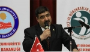
» Genel Başkanı Yücel CAN, Türkiye ve dünya ile ilgili genel konuları içeren yazılı basın açıklaması yaptı.
Ağustos
16
2022

Ağustos202022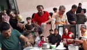
» İdareci ve Bürokratlar Birliği Derneği Genel Başkanı Yücel Can, Muharrem ayı vesilesiyle, Genel Başkan Yardımcısı, Süleyman Muslu’nun destekleri ile Ankara da düzenlenen Aşure günü programına katılara
Ağustos
20
2022

Mayıs132022 » Toplumun değişik kesimlerinin ilgi gösterdiği kutlama programında İdareci ve Bürokratlar Birliği Derneğine sıcak karşılama ve ilgi.
Mayıs
13
2022
Nisan272022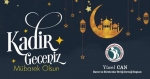
» Rahmet ve mağfiretin sağanak halinde indiği Kadir Gecesi Tüm İslam Alemine Mübarek olsun.
Nisan
27
2022

Nisan242022 » Şehit, Gazi, Yetim, Muhtaç, Toplumun Birçok Kesimini Bir Araya Getirmeye Çalışan İdareci ve Bürokratlar Birliği Derneği Kardeşlik ve Birliktelik İftarı
Nisan
24
2022
Nisan52022 » İdareci̇ Ve Bürokratlar Birliği Derneği̇ "Dost Meclisi" Buluşmaları programına basından büyük ilgi gösterdi.
Nisan
5
2022
Nisan32022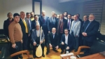
» İdareci ve Bürokratlar Birliği Derneği Sözden Öte Kurulduğu ilk günden bugüne Yönetim Kurulu Üyeleri dünden bugüne İdareci ve Bürokratlar Birliği Derneğinde adeta vefa örneği gösteriliyordu.
Nisan
3
2022

Mart252022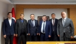
» Türkiye Belediye Başkanlar Birliği Başkanı Sayın Hüseyin Eren'i makamında ziyaret etti.
Mart
25
2022

Mart252022 » İdareci ve Bürokratlar Birliği Genel Başkanı Yücel Can Radyo Karadeniz'de Kütahya'yı tanıttı.
Mart
25
2022
Mart152022 » Dayım Faik Sevim’in vefatından itibaren arayan, destek veren, cenaze namazına teşrif eden, taziyede bizi yalnız bırakmayan
Mart
15
2022
Şubat212022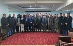
» Kudüs Şurası etkinliği kapsamında Başkan Yücel Can ve Yönetim Kurulu Üyeleri ile Ankara STK Platformu üyeleri ile birlikte bir araya gelindi.
Şubat
21
2022

Şubat112022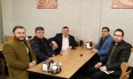
» İdareci ve Bürokratlar Birliği Derneği Bitlis programı çerçevesinde.
Şubat
11
2022

Aralık262021 » Biz Birlikte Güçlüyüz ruhu ile.
Aralık
26
2021
Aralık252021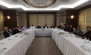
» İdareci ve bürokratlar birliği derneğimizin 5. Olağan kongremiz sonrasında ilk yönetim kurulu toplantımızı gerçekleştirdik.
Aralık
25
2021

Aralık82021 » 5. Olağan Kongresi gerçekleştirildi.
Aralık
8
2021
Kasım292021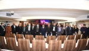
» 2009 yılında kurulan İdareci ve Bürokratlar Birliği Derneğimiz 5. Olağan Kongresi Türkiye Belediyeler Birliğinde gerçekleştirildi.
Kasım
29
2021

Kasım222021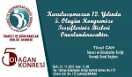
» 5. Olağan Kongremize davet.
Kasım
22
2021
